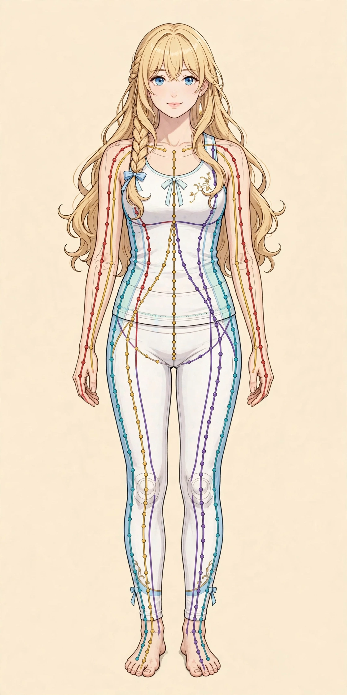

難波で脚のむくみと冷えが気になる夜に｜要因とセルフケア、受診の目安
１．まず、悩みを整理してみましょう
「夕方になると靴がきつく感じる」「帰宅しても足先の冷えが気になって、なかなかくつろげない」——むくみと冷えは、セットで気になる方が少なくないお悩みです。どちらも、その日の過ごし方や体調によって感じ方が変わるもので、原因を一つに決めることはできません。ここでは要因の考え方と、夜の時間に取り入れやすいセルフケア、医療機関への相談を考えたい目安を整理します。
２．考えられる要因
- 長時間の同じ姿勢：座りっぱなし・立ちっぱなしが続くと、ふくらはぎの筋肉を使う機会が減り、脚の巡りに影響することがあります。
- 冷房や服装による冷え：夏場の冷房の効いた室内や、足首を出す服装などで、下半身が冷えやすい環境もあります。
- 水分・塩分の摂り方：塩分の多い食事が続いた翌日に、むくみを感じる方もいます。
- 運動不足や締め付けの強い衣類：脚の巡りを妨げる一因になる場合があります。
- 疲労の蓄積：忙しい日が続くと、夕方の脚の重さを強く感じることもあります。
３．夜にできるセルフケア
帰宅後の時間に取り入れやすいものを中心に挙げます。いずれも無理のない範囲で行い、痛みや違和感がある場合は中止してください。ふくらはぎの筋肉（図1）と、脚の経絡の流れ（図2）も参考にしてください。
- 足首を回す・ふくらはぎを動かす：座ったままでもできる小さな動きで、脚の筋肉を使う時間をつくります。
- 湯船につかる：シャワーだけで済ませず、入浴で体を温める習慣を取り入れる方もいます。
- 脚を少し高くして休む：就寝前や帰宅後に、クッションなどで脚を楽な高さに置いて休む方法もあります。
- 締め付けの少ない服装に着替える：帰宅後は楽な服装で過ごし、体を締め付けない時間を意識します。


４．受診の目安
次のような場合は、セルフケアやサロンでのケアより先に、医療機関への相談をご検討ください。
- 片脚だけが急にむくんで、痛みや赤みを伴う
- 息苦しさや胸の違和感を伴う
- むくみが数日以上続き、朝になっても引かない
- 短期間で体重が大きく増えた
むくみの背景には体の不調が隠れていることもあると言われます。気になる場合は、自己判断せず医療機関にご相談ください。
５．ステラシリウス（難波）のご案内
ステラシリウス（難波）は、月〜土 17:00〜22:00／日曜 12:00〜22:00に営業する女性専用サロンです。お仕事帰りの夜の時間帯に、その日の脚の状態をうかがいながら、ふくらはぎから太ももへのオイルマッサージと美容整体を組み合わせた90分 10,000円（税込）のコースをご用意しています。シャワー完備のため、施術の前後に汗やオイルを流してからお帰りいただけます。夕方の脚の重さが気になる日の、夜の休息の時間としてご利用いただいています。なお、当サロンはリラクゼーションを目的としたサロンで、医療行為は行いません。「受診の目安」に当てはまる場合は、まず医療機関へご相談ください。
関連ページ：
メニュー・料金 ／
こんなお悩みに ／
ご予約・お問い合わせ
関連コラム：難波で腰の重さが気になるときに ／ 難波で仕事帰りに気になる疲労感｜要因の整理とセルフケア、受診の目安 ／ 難波で寝つきが気になるときに｜夜の過ごし方と受診の目安
関連コラム：難波で腰の重さが気になるときに ／ 難波で仕事帰りに気になる疲労感｜要因の整理とセルフケア、受診の目安 ／ 難波で寝つきが気になるときに｜夜の過ごし方と受診の目安